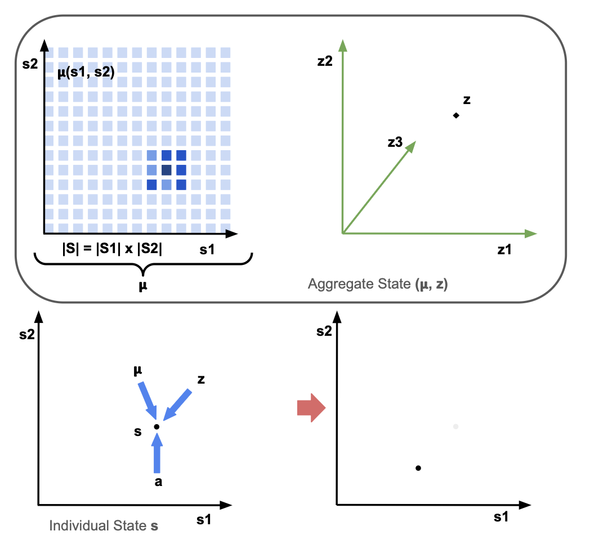
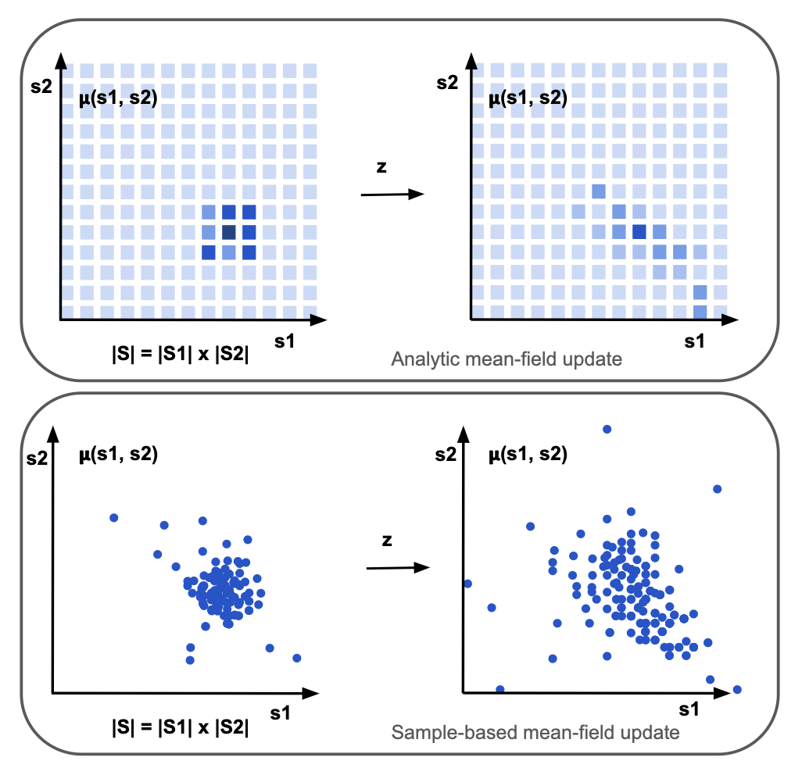
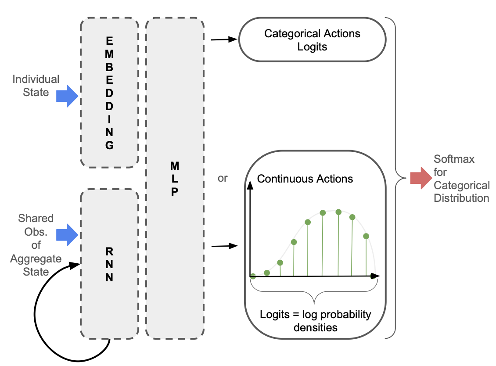
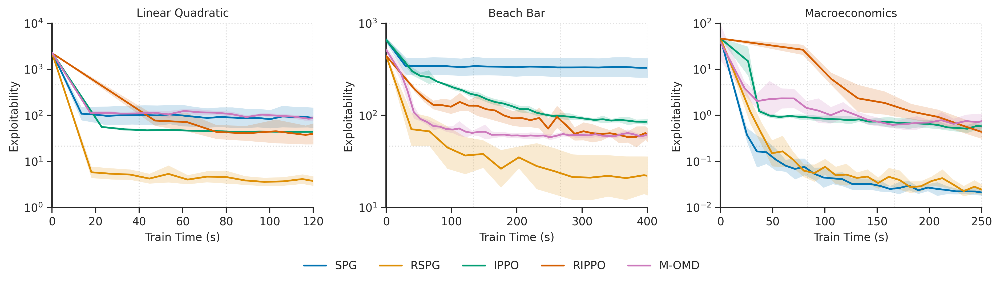
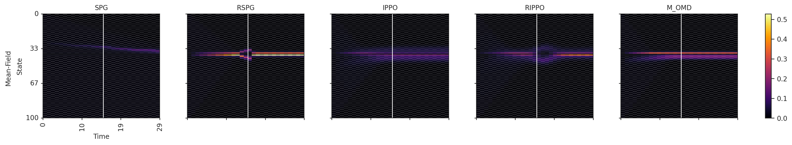
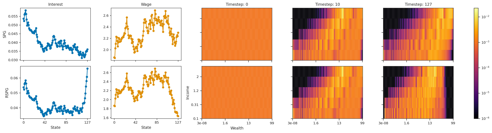

Recurrent Structural Policy Gradient for Partially Observable Mean Field Games
- Clarisse Wibault
- Johannes Forkel
- Sebastian Towers
- Tiphaine Wibault
- Juan Duque
- George Whittle
- Andreas Schaab
- Yucheng Yang
- Chiyuan Wang
- Michael Osborne
- Benjamin Moll†
- Jakob Foerster†
† Equal Supervision.
Abstract
Mean Field Games (MFGs) provide a principled framework for modeling interactions in large population models: at scale, population dynamics become deterministic, with uncertainty entering only through aggregate shocks— or common noise. However, algorithmic progress has been limited since model-free methods are too high variance and exact methods scale poorly. Recent Hybrid Structural Methods (HSMs) use Monte Carlo rollouts for the common noise in combination with exact estimation of the expected return, conditioned on those samples. However, HSMs have not been scaled to Partially Observable settings. We propose Recurrent Structural Policy Gradient (RSPG), the first history-aware HSM for settings involving shared aggregate observations. We also introduce MFAX, our JAX-based framework for MFGs. By leveraging known transition dynamics, RSPG achieves state-of-the-art performance as well as an order-of-magnitude faster convergence and solves, for the first time, a macroeconomics MFG with heterogeneous agents, common noise and history-aware policies.
Motivation
Training policies in large multi-agent systems is notoriously difficult: RL-based methods rely on high-variance, trajectory-based sampling and therefore scale poorly as the number of agents grows. But, in many large population systems, such as financial markets, traffic control and communication networks, individuals only respond to the aggregate behaviour of other agents. As a motivating example, an agent might care about the price of a stock, which is determined by the rest of the population, but not whether a certain individual has decided to buy or sell that stock. Moreover, in such large population systems, individual randomness or idiosyncratic noise marginalises out at the macroscopic level. At such a scale, the system's evolution is well defined by deterministic population dynamics, with uncertainty entering only through common noise— aggregate shocks that affect the entire population simultaneously.
Hence, assuming all agents have the same state-conditioned objective, reward, transition and observation models, the analysis of a large population game can be reduced to the interaction between a stand-in agent with policy \(\pi\) and the population distribution, or mean-field \(\mu\).
In such MFGs, the Markov State — or aggregate state \((\boldsymbol{\mu}, z)\) — is composed of two components: the mean-field distribution \(\boldsymbol{\mu}\) over the individual state space \(\mathcal{S}\) and the common-noise \(z\) over the common-noise state space \(\mathcal{Z}\), which includes all other components of the state. Unlike the individual state space, which must be low-dimensional for tractability of analytic mean-field updates, the common-noise state space can be arbitrarily high-dimensional.

The transition dynamics of an individual agent are determined by the individual state \(s\) and action \(a\) of the agent, the mean-field distribution \(\boldsymbol{\mu}\) and the common-noise \(z\).
In MFGs, the aim is to find a Mean-Field Nash Equilibrium such that the mean-field sequence \(\boldsymbol{\mu}_{0:t}\) is generated by the policy \(\pi\) and the policy \(\pi\) is the best-response to the mean-field sequence \(\boldsymbol{\mu}_{0:t}\).
Problem Setting Assumptions
In many systems of interest, we can make two assumptions:
- Firstly, that the individual state-space is low-dimensional. For example, in macroeconomics or finance, the state-space might be two-dimensional, corresponding to wealth and income; or, in a power network, the state-space might be one-dimensional, corresponding to the voltage of individual components in the network.
- Secondly, that agents receive shared observations of the aggregate state. As well as knowing their individual states, rather than receiving individual observations of the aggregate state, agents receive the same observation of the aggregate state. This holds true for any system involving public information, such as the prices of stocks in a stock market, or infection rates that might be publicly available in the news.
Analytic Mean-Field Updates
Using Assumption 1., Analytic Mean-Field updates —in contrast to approximate mean-field updates, such as sample-based updates— compute the exact expectations over next states. Since analytic updates require integrating over the exact individual state and action space, the individual state space must be tractable:

The issue is that, in partially observable systems, where the policy conditions on individual trajectories \(\tau_t := (s_0, o_0, a_0, \cdots s_t, o_t)\in \mathcal{H}_t :=(\mathcal{S} \times \mathcal{O} \times \mathcal{A})^t \times \mathcal{S} \times \mathcal{O}\), the analytic mean-field update becomes intractable, due to the need to maintain and integrate over a distribution of individual-action-observation histories, \(\boldsymbol{\tilde{\mu}}\):
Using Assumption 2., we propose restricting memory to the history of shared observations of the aggregate state. Since agents know their individual state, agents must only maintain a belief in the aggregate state such that \((s_t, o_{0:t})\) is a sufficient statistic for optimal control. This restricted memory maintains tractibility of the analytic mean-field update, while also allowing a history-conditioned policy to be learned:
In the policy network depicted below, only the observations of the aggregate state are passed into the Recurrent Neural Network so that the hidden state is independent of the individual state.

Hybrid Structural Methods
Using Assumption 1., Hybrid Structural Methods yield lower variance updates than fully sample-based Reinforcement Learning approaches to solving MFGs, since tractability of the individual state-space means that we can compute the exact expectation over individual state transitions. In the below equation, \(\mathbf{v}\) represents a vector with the values of each individual state, and \((j)\) indicates the sample environment:
MFAX
MFAX is our JAX-based MFG library. Unlike other MFG libraries, MFAX:
- Provides both white-box and black-box access to individual state transition dynamics, supporting both analytic and sample-based mean-field updates.
Accelerates analytic mean-field updates by using a functional representation of pre-multiplying by the \(\mathbf{A}\) or \(\mathbf{A}^\top\) matrix, and parallelising across both states and actions. A single mean-field update of the linear-quadratic environment that is standard in MFG literature is 10x faster than OpenSpiel and 1000x faster than MFGLib.
@partial(jax.jit, static_argnames=("self",)) def mf_expected_value( self, vec: jax.Array, prob_a: jax.Array, aggregate_s: PushforwardAggregateState ) -> jax.Array: """ Functional representation of pre-multiplying by A matrix (expected value of next state). Vmaps over states and actions. Args: vec: (n_states, 1) vector to be pre-multiplied by A matrix prob_a: (n_states, n_actions) probability of each action for each state aggregate_s: aggregate state Returns: expected_values: (n_states, 1) expected values """ # --- vmap over states --- def single_state(i): return jax.vmap(self._single_pushforward_step, in_axes=(None, 0, None))( self.state_indices[i], jnp.arange(self.n_actions), aggregate_s ) next_state_idxs, next_state_probs = jax.vmap(single_state, in_axes=(0))( jnp.arange(self.n_states) ) expected_values = jnp.sum( vec[next_state_idxs] * next_state_probs * prob_a[..., None], axis=(1, 2) ) # --- no stop gradient --- return expected_values @partial(jax.jit, static_argnames=("self",)) def mf_transition( self, mu: jax.Array, prob_a: jax.Array, aggregate_s: PushforwardAggregateState ) -> tuple[jax.Array, tuple[jax.Array, jax.Array]]: """ Functional representation of pre-multiplying by transpose of A matrix (mean-field update). Vmaps over states and actions. Args: mu: (n_states, 1) current mean-field vector prob_a: (n_states, n_actions) probability of each action for each state aggregate_s: aggregate state Returns: next_mu: (n_states, 1) next mean-field vector """ # --- vmap over states --- def single_state(i): # --- vmap over actions --- return jax.vmap(self._single_pushforward_step, in_axes=(None, 0, None))( self.state_indices[i], jnp.arange(self.n_actions), aggregate_s ) next_state_idxs, next_state_probs = jax.vmap(single_state, in_axes=(0))( jnp.arange(self.n_states) ) next_m = ( jnp.zeros((self.n_states,)) .at[next_state_idxs.reshape(-1)] .add( (mu[..., None, None] * next_state_probs * prob_a[..., None]).reshape(-1) ) ) return next_m- Supports more complex environments involving partial observability, common noise and multiple initial distributions.
Results
We evaluate Recurrent Structural Policy Gradient (RSPG) —the first history-aware HSM— in terms of exploitability, which quantifies how much better-off an agent could be by deviating from the policy used by the rest of the population. We note that, in partially observable environments, exploitability is more of a measure of regret.
We benchmark RSPG with Structural Policy Gradient (SPG) (RSPG's memoryless counterpart) and three RL-based MFG algorithms: Deep Munchausen-Online Mirror Descent (M-OMD), Independent PPO (IPPO) and Recurrent IPPO (RIPPO).
Unsurprisingly, due to its low variance updates and the fact that it learns a history-aware policy, RSPG converges faster to a lower exploitability. In the macroeconomics environment, since the observation of the aggregate state contains almost all of the relevant information, SPG performs similarly to RSPG.

When visualising the mean-field evolution, we see that with history-aware policies (RSPG and RIPPO), agents successfully learn anticipatory behaviour. This is not the case for the memoryless policies. The Beach Bar environment is a crowd-modelling environment where agents are rewarded for being close to the bar, but incur a strong negative reward for being next to the bar if it closes, which can happen halfway through the episode (white line in the below diagram). Visualising the mean-field distribution shows that, with RSPG and RIPPO, agents learn to apprehend the potential closure time of the bar, moving away from the bar just before, and returning towards the bar if it stays open. This is not the case for the memoryless policies.

Similarly, in the macroeconomics environment, agents learn to apprehend the end of the episode. Agents are rewarded for consuming, but must learn to balance instantaneous consumption with saving for the future. Interest rates and wages are endogenously determined from the mean-field distribution. The three diagrams on the right of the below figure depict the mean-field distribution at 3 timesteps during the episode. Initially, the mean-field is uniform. With both SPG (top) and RSPG (bottom), agents learn to save: agents initially in high-income but low-wealth states quickly move out of these low-wealth states. However, with RSPG, agents learn to spend just before the end of the episode – demonstrated by the low density in high-wealth states at the before-last timestep. This is not the case for SPG. We also see how this sudden spending pushes interest rates up (left-most column) and wages down (second-left).

Citation
The website template was borrowed from Easy Academic Website Template and Jon Barron